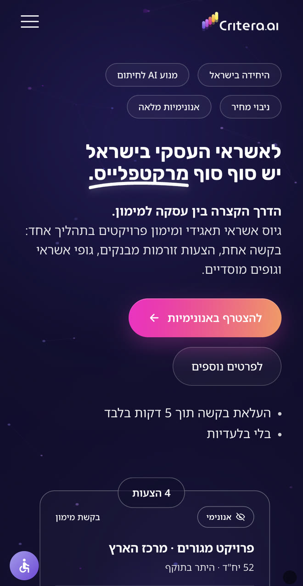
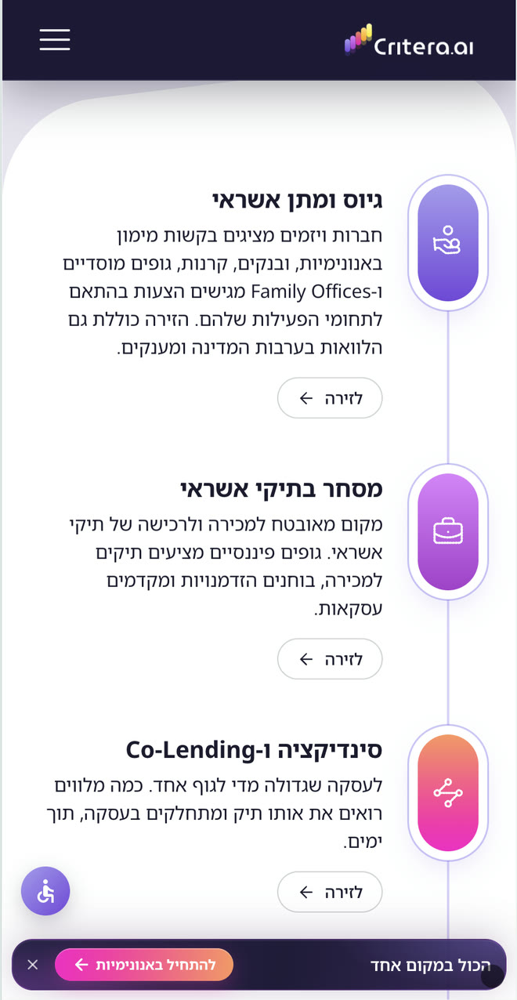
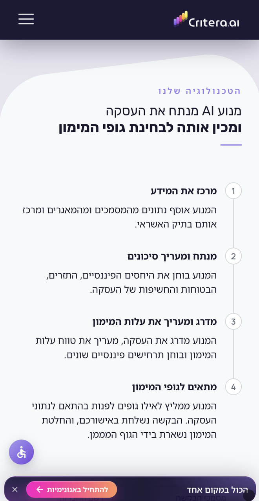
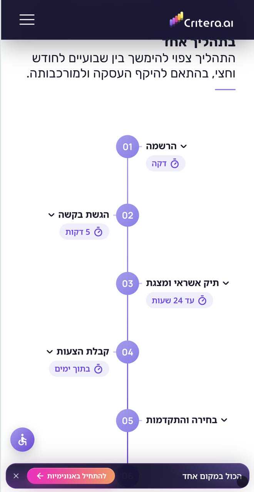
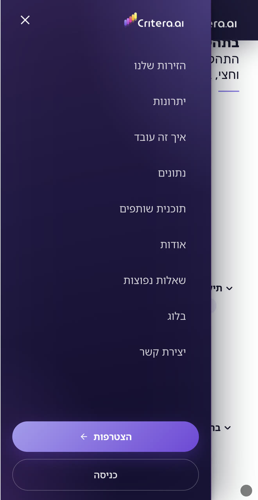
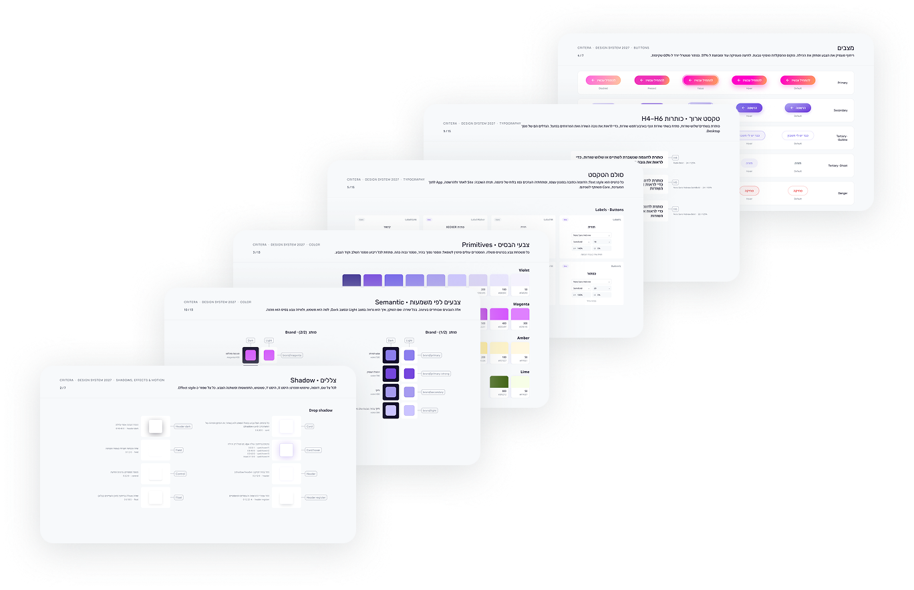
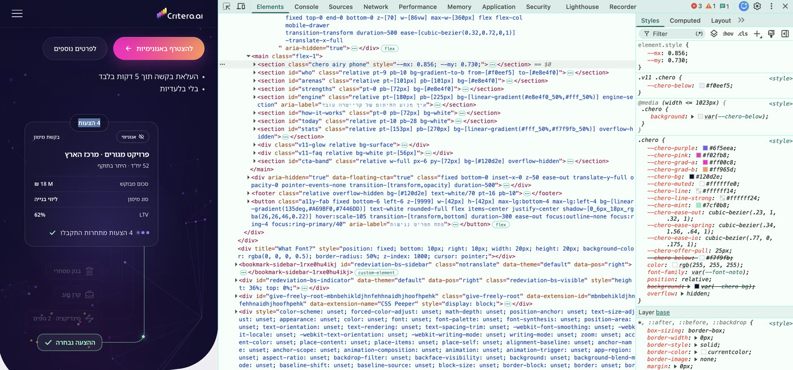

האשראי העסקי
מתחבר ל‑AI
מרקטפלייס שמפגיש חברות ויזמים עם גופי מימון, ומרכז את הדרך מבקשה להצעות במקום אחד.
מהזהות החזותית ועד האתר החי וסרטוני הפרסום:
מיתוג, עיצוב, אנימציה ופיתוח.
מהרעיון הפיננסי
לחוויה דיגיטלית
על קרייטרה
קרייטרה היא מרקטפלייס לאשראי עסקי ולמימון פרויקטים. היא מחברת בין מגייסי אשראי,
גופי מימון ושותפים מקצועיים, ומאפשרת להם להתקדם לעסקה משותפת.
התפקיד שלי
הצטרפתי כשהרעיון העסקי כבר היה מגובש.
הובלתי
- מחקר החזותי והשיווקי
- מיצוב ומסרים
- מיתוג, זהות ועיצוב האתר
- עיצוב בניית אנימציות בקוד
- פיתוח Front‑end
- בלוג ותוכן
- סרטוני פרסום
- יעוץ מרקטינג וקידום אורגני
משך הפרויקט
חודשיים
שלושה קהלים,
שלוש נקודות מבט
האתגר היה להראות לכל אחד מה הוא מקבל, ואיך הפעילות של כולם מתחברת.
חברות ויזמים
מגייסים אשראי
לחברה או לפרויקט?
לאחר הגשת הבקשה, מנוע AI מכין את תיק האשראי ומתאים את הבקשה לגופי המימון הרלוונטיים. ההצעות מגיעות למקום אחד, ואפשר להשוות ולבחור את המימון המתאים לכם.
גופי מימון
מחפשים עסקאות
למימון?
המערכת מתאימה לכם עסקאות לפי תחומי המימון והקריטריונים שלכם. כל עסקה מגיעה לאחר חיתום, עם תיק אשראי מוכן לוועדה. ללא עלות.
ברוקרים ויועצים
מנהלים לקוחות
שמגייסים מימון?
מצגת אשראי בדקות וגישה לגופי מימון מקצועיים, כשהלקוחות נשארים רשומים על שמכם.
עמוד משותף,
עם סדר עדיפויות ברור
בתחילת הדרך בחנו פנייה לקהל אחד. במהלך הדיונים והסקיצות התברר שפנייה כזו משאירה את הערך לשאר המשתתפים ברקע. הצעתי דף בית שמציג את המרקטפלייס לכולם, ובהמשך דפי נחיתה ייעודיים לכל קהל בקמפיינים.
כדי לתת ביטוי גם לקהל המרכזי וגם לשותפים לעסקה, הגדרתי חלוקת דגש בתוכן:
חברות ויזמים שמגייסים אשראי
גופי מימון
ברוקרים ושותפים מקצועיים
מגייסי האשראי קיבלו את הבמה המרכזית. גופי המימון קיבלו הסבר על איכות המידע וההתאמה לעסקאות, והשותפים קיבלו מקום לצד הפנייה האישית אליהם.
גם השפה נבחרה בהתאם: מקצועית ופשוטה, בעיקר בניסוח ניטרלי, שמכבד את האינטרסים של כל צד.
לתת לערך ביטוי
במספרים
מתוך לימוד התחום והשיחות עם הצוות עלה הצורך להציג את היתרונות במונחים שמעסיקים את הקהל: זמן, עלות והתקדמות לעסקה. שילבתי באתר מספרים בולטים, כך שאפשר לקלוט את הערך גם בסריקה קצרה.
חיסכון בזמן התהליך
חיסכון לגופי מימון בעלויות חיתום, סינון ושיווק
להכנת בקשת אשראי ומצגת מקצועית
מהגשת הבקשה לסגירת העסקה, בהתאם להיקפה ולמורכבותה
הנתונים הם הערכות החברה המבוססות, לפי הצהרתה, על בדיקות ומבחנים ומתעדכנות לאורך הדרך.
סימן
של צמיחה
השם Critera נולד מרעיון הקריטריונים לבחירה. הסיומת AI מציינת את המנוע הטכנולוגי שבבסיס הפלטפורמה.
עיצבתי לוגו מחמישה פסים צבעוניים העולים בהדרגה, כמו גרף של צמיחה. הצבעים מבטאים את מגוון המשתתפים והאפשרויות במרקטפלייס. חמישה פסים אפשרו לי לבטא ריבוי ולשמור על צורה פשוטה ומזוהה; הקצוות המעוגלים מוסיפים רכות ונגישות.
פיננסים
באופי טכנולוגי
רציתי שהאתר יעורר סקרנות וישדר את המקצועיות של החברה כבר במפגש הראשון. חיברתי בין האיפוק של עולם הפיננסים לצבעוניות שמבטאת את מגוון האפשרויות במרקטפלייס.
הסגול הכהה יוצר תחושת עומק ומבליט את צבעי המותג. משטחים שקופים למחצה וגרדיאנטים מוסיפים אור ושכבות, ונותנים לרעיון השקיפות ביטוי חזותי. טיפוגרפיה ברורה משלימה את השפה ושומרת על קריאות.
זהות שמלווה
את הגלילה
המשטחים האלכסוניים והפינות המעוגלות הם חלק מהזהות של קרייטרה. שילבתי אותם בקומפוזיציות משתנות כדי ליצור מראה מזוהה וקצב שמזמין להמשיך לגלול.
המעבר בין אזורים כהים ובהירים מגוון את החוויה ומאפשר רגעים שקטים יותר לקריאה. כך נשמר האיזון בין הנוכחות החזותית לבין התוכן.
להכיר בהדרגה,
להצטרף כשמתאים
בחרתי לרכז את ההיכרות עם קרייטרה בדף בית רציף. מיד אחרי הפתיחה, כל קהל פוגש שאלה משלו, תשובה קצרה וקישור להרשמה המתאימה.
משם העמוד מתקדם לאפשרויות הפעילות, ליתרונות ולתהליך. האודות והבלוג מאפשרים להעמיק בנפרד, והקריאה לפעולה נשארת זמינה לאורך הגלילה. המטרה: לעורר עניין ולהוביל להרשמה או לשיחה עם הצוות.
לראות איך
החיבור קורה
ב‑Hero, בקשת מימון אחת פוגשת הצעות מכמה גופים. האנימציה הופכת את הרעיון של המרקטפלייס לתרחיש שאפשר להבין במבט.
בהמשך, ארבע זירות הפעילות נעות סביב קרייטרה: אשראי, מסחר בתיקי אשראי, סינדיקציה, והון ושותפויות. המבנה מציג את היקף האפשרויות, וכל זירה מובילה ישירות להרשמה הרלוונטית.
להסביר את הטכנולוגיה
שמאחורי העסקה
משוב מאנשי מקצוע חידד שהמנוע צריך לקבל מקום בולט יותר באתר. בעקבותיו יצרתי אזור ייעודי עם הסבר ואנימציה.
ההמחשה עוקבת אחר הנתונים: מהמסמכים והמאגרים, דרך הניתוח, ועד לתיק האשראי ולהתאמה לגופי מימון. היא מציגה תהליך מורכב ברצף חזותי, ומבהירה היכן פועלת הטכנולוגיה והיכן מתקבלת החלטה אנושית.
לדעת מה קורה,
ומי נמצא בצד השני
ציר הזמן מפרט שישה שלבים, מההרשמה ועד לסגירה, ומציג את משכי הזמן הצפויים. לצדו, היתרונות מבהירים מה קרייטרה מציעה: אנונימיות, הכנת תיק אשראי וגישה לגופי מימון מקצועיים.
לברוקרים וליועצי המימון ניתן הסבר על סביבת העבודה הדיסקרטית ועל הגשת בקשות באנונימיות. תמונות הצוות, הניסיון המקצועי ופרטי הקשר הגלויים מזמינים לפנות ולשאול.
אזור השאלות והתשובות כולל חיפוש וסינון לפי נושא. הבלוג, שאת תוכנו פיתחתי, מרחיב את המענה ותומך בחשיפה האורגנית.
החוויה ממשיכה
למסך הקטן
התאמתי את הפריסה, האנימציות וציר הזמן למובייל, תוך שמירה על ההיררכיה ועל הגישה להרשמה. הזהות נשארת עקבית, והקומפוזיציה מתאימה את עצמה לגודל המסך.





בסיס
להמשך הדרך
ריכזתי את הצבעים, הטיפוגרפיה והרכיבים במערכת עיצוב ב‑Figma. המערכת מתעדת את השפה ומגדירה בסיס עקבי להמשך הפיתוח.

אותה זהות,
סיפור לכל קהל
יצרתי סרטוני פרסום. הדוגמאות מציגות הזדמנות עסקית בעקבות זכייה במכרז, מעולמות הבנייה והתעשייה.
הסיפורים ממחישים את פער המימון ומציגים את הדרך להצעות דרך קרייטרה. הדמויות והסביבה מותאמות לקהל, והצבעים, הצורות והטיפוגרפיה בתנועה ממשיכים את זהות המותג.
מהעיצוב
לאתר חי
את ה‑Front‑end בניתי בעזרת Claude Code, על בסיס העיצוב והאנימציות שתכננתי. עבדתי עם הצוות במאגר קוד משותף, בדקתי את האתר ואת תהליכי ההרשמה והכניסה, והעליתי אותו לאוויר.
העבודה הישירה בקוד אפשרה לי לבחון ולדייק את הקומפוזיציה והתנועה בתוך האתר עצמו.
